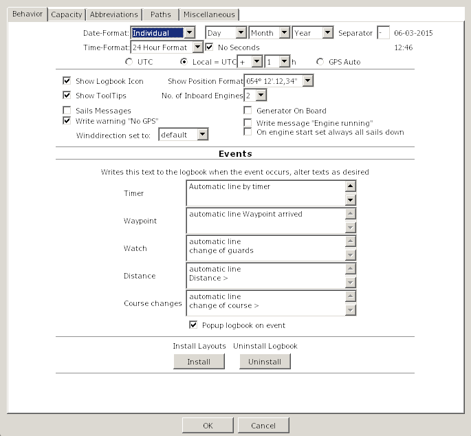
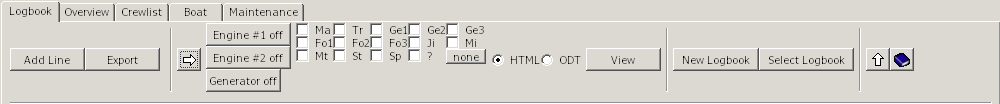

The logbook can be used immediately, all files are created at first
start.
All data is stored automatically when the plugin or OpenCPN is closed.
To view or modify ODT-files an ODT program must be installed.
OpenOffice or LibreOffice are recommended, MS Word starts only if the path
is entered accordingly.
To change/create layouts in ODT-format , please use Libre-/OpenOffice.
* Recommended *
If you like to enter data in fractions (1/2, 1/4) in the fields water
(total), fuel (total) or AH # 1 or AH # 2, please put the data into
Logbook-Options/Capacity.
For the watermaker (if any) please enter the water output per hour
* Recommended *
Enter the following data in the boat-tab: Boat name, home port
* Optional *
Enter your data in the crew a crewlist-tab and create a watchlist
Click the button 'New Line' (the GPS and NMEA data should
appear)
Select a layout (please don't select a clouds-layout, I
explain this here )
Select the radio button HTML
Click the "View" button (your browser opens a new tab and
displays the data)
Select the radio button ODT
Click the "View" button (your ODT-program opens with the
data)
Close the ODT-program (Important! Otherwise only the old
data will be displayed)
Choose a different layout.
Click the "View" button ( your ODT-program opens with the
data, with the new layout)
Detailed
Help
Options
Please click in the fields to get an explanation / The tabs brings you
to the next image

Date
Format
Has two choices: Local and Individual
Local
uses the dateformat you have selected in the OpenCPN-Mainprogram with
the language. The three dateformat-selectorboxes and the separator are
disabled.
Individual use
this option when you like to change the local-format, e.g. for users
without a translation of OpenCPN in their language and english language
is set in the OpenCPN-Mainprogram or for UK/Australian users with a
different dateformat than USA.
Date
Format Selector
Use this three Choiceboxes to
select the dateformat.
the format is shown behind the separator-textbox.
Separator
Insert the desired separator for the date
The format is shown behind the separator-textbox.
Time
Format
This
choicebox is disabled in countries with a 24-hour-format, this depends
on the selection of the language in the OpenCPN-Mainprogram.
In countries with a 12-hour-format, you can switch between
12/24-hour-format.
e.g. for users without a translation of OpenCPN in their language and
english language is set in the OpenCPN-Mainprogram.
No
Seconds
If checked, no seconds are
used, stored and displayed.
UTC/Local/GPS
Auto
GPS sends time-data in UTC
Check this radiobutton, if you like to set the time in the logbook to
UTC
Check the Local radiobutton, if you like to set the time in the logbook
to local time. Select +/- and choose your timezone
GPSAuto sets the locale time ( Formula: +/- (Your
Longitude/15) ) in the field 'Time'
Example: UTC=15:00h (03:00 PM), at 30°W (-2h) = 13:00h (01:00 PM),
this time is inserted in the logbook
The true locale timezone is disregarded
To document this, a correction in the dropdown-box for the timezone is
made
Show Logbook Icon
Add / delete the
icon to the toolbar of OpenCPN
Show
Position Format
Changes the format of the
display level.
12° 45 ' 30 "or 12° 45,5'
When switching within a logbook made before, the entries are not
converted to the new format!
Show Tooltips
Shows the little help texts
No.
of inboard Engines
Select how many engines your boat has.
It sets the Engine/Sails-Grid to one or two engines, selects
the correct HTML/ODT-layout and disables the second engine in
NMEA-Options by selecting one engine.
Sails messages
With a checkmark
When a sail is checked:
all sails with a checkmark appear in Engine/Sails column "Sails" and
the message "Sails hoisted" appear in column "Remarks"
When all sails are unchecked:
the message "Sails down" appear in Engine/Sails column "Remarks"
For Motorboats always uncheck this option.
Generator
on Board
Select if there is a generator on board of your boat.
If checked it will set the generator columns in
Engines/Sails-Grid and enables the generator in
the NMEA-Options.
Write
warning No GPS
When GPS isn't used or it may be defective the message 'No
GPS' appears on and on.
By removing the check the constant repetition of the message
'No GPS' in 'remarks' are suppressed
Write message "Engine running"
When the engine is running
you can prevent the message "Engine #1 running"
Sailboats should allways set a checkmark,
Motorboats could uncheck, to not get the message repeatedly.
Winddirection
set to
Is related to either
"default" = relative to the ship or "Heading" = wind direction
'Heading' is only available if a device is present, which provides one
of the NMEA sentences $HDT or $HDM, otherwise automatic 'default' is
used.
On
engine start set always all sails down
On Engine start:
All sails are unchecked and the message "Sails down" appears in Engine/Sails Remarks
Automatic Lines
You can start/suspend/stop events in the statusbar of the logbook.
The text you enter here will be displayed when a event occurs
Text
Timer
Sets this text in 'Remarks'
if a timer-event occurs.
Text
Waypoint
Sets this text in 'Remarks'
if a waypoint-event occurs.
Text
Watch
Sets this text in 'Remarks'
if a change-of-watch-event occurs.
Text
Distance
Sets this text in 'Remarks'
if a distance-event occurs.
Text
Course-Change
Sets this text in 'Remarks'
if a course-change-event occurs.
Install
Layouts
Search in the filedialog for the file
'LogbookKonni_Layouts.zip'
Windows needs this button only to install layout-updates.
All layouts are copied with the exe-installer.
Uninstall
Logbook
Windows only:
After you clicked the button, close OpenCPN. In the filedialog select
'uninst_logbookkonni_pi.exe'. After the Uninstall you can restart
OpenCPN.
the plugin will be uninstalled properly, when you follow this
instruction
Popup
logbook
When checked the logbok
window will popup to the foreground when an event occurs.
Please click in the fields to get an
explanation / The tabs brings you to the next image
The following entries are
nessesary, if you like to insert Values in the fields
Water-, Fuel (total), AH #1, AH #2 and the Watermaker-Output
in factions (1/2,1/4)
Watertank
the capacity of
the Watertank
Watermaker
the output of the Watermaker
per hour
Fueltank
Capacity of the fueltank
Batterybank
#1
Capacity of Batterybank #1
Batterybank
#2
Capacity of Batterybankl #2
Please click in the fields to get an
explanation / The tabs brings you to the next image
Abbreviations
If a translation
for the logbook-plugin is availabe in your language, the amounts are
displayed correct.
But you can alter every field (e.g from (gal) to (l)iter) and (l)iter
is used with the next logbook entry. It's saved when OpenCPN is closed.
At the next startup it's the default.
Windspeed/Winddirection
Without a NMEA-Windmeter or when GPS is out of order, then
this
option is used for the Wind
A NMEA-Windmeter sends the data automatically, so this option is used
only when you enter data manually.
Please click in the fields to get an explanation
/ The tabs brings you to the next image
Path to the ODT-Editor
The recommended ODT-Editors are Open- or LibreOffice.
If OpenOffice/LibreOffice is installed the path is set automatically.
With a MS-Word installation the path is not correct displayed. please
click on the folder-symbol, search for the file 'WINWORD.EXE' and click
OK. In the lineeditor-field append a '%s'.
"C:\YourPathToWord\WINWORD.EXE" %s
Word displays that it has to "repair" the file, but displays
then the layout with your data.
It's recommended that you use Open- oder LibreOffice to alter/create a
layout.
Path
to the datamanager
For Windows the Explorer is predefiend
For Linux Dolphin (KDE) is predefiend
For Apple the Finder is predefined
Path
to the mail-program
*Optional*
Only used when you like to send a layout via email to a friend.
Path
to the HTML-Editor
*Optional*
if you want to alter a HTML-layout, please set the path to the editor
here
This option is used only if you like to alter/create a layout. To
display your data the browser is used.
Filedialog
Opens a filedialog
Reset
Paths
Resets the paths to the
predefiend values
Please click
in the fields to get an explanation / The tabs brings you to the next
image
To use this functionality you should select a Route or Track in
the
Route column
that is known in OpenCPN
as only then the correlation can be made between the Route/Track and
the logbook entries.
select one or both if you want to export Route/Tracks to
Google-Earth
Set
Linewidth to
set the linewidth for
routes/tracks
Set Transparency to
set if the line is transparent or solid
Set Route-Linecolor
set the color for the
Routeline
Set Track-Linecolor
set the color for the
Trackline
Please click in the fields to
get an explanation / The tabs brings you to the next image
Check Button
To use this check you should
start your engine(s) and click the check button.
Then the NMEA stream will be monitored for the ERRPM message and the
message will be displayed. From this message the ID of the engine can
be determined.
Use NMEA for Engine #1
Check if NMEA ERRPM message
should be used for Engine #1.
Use NMEA for Engine #2
Check if NMEA ERRPM message
should be used for Engine #2.
Use NMEA for Generator
Check if NMEA ERRPM message
should be used for Generator.
Engine #1 Id
Fill in the Engine Id for
Engine #1 that was found in
the ERRPM message.
Engine #2 Id
Fill in the Engine Id for
Engine #2 that was found in
the ERRPM message.
Generator Id
Fill in the Engine Id for
the Generator that was found in
the ERRPM message.
Calculate Hours
When checked the program will use the ERRPM message to
calculate engine and/or generator hours.
Use WIMDA
When checked the NMEA WIMDA
message is monitored to get the values for Barometer and Air
Temperature.
Please click in the fields to
get an explanation / The tabs brings you to the next image
Abbreviation Field
These fields
describe the abbreviations of the Sail buttons
Sail Name
These fields describe the
name of the sails that will be filled in the logbook entry
when the buttons on the logbook page are checked.
Please click in the fields
to get an explanation / The tabs brings you to the next image
Button Layout
This layout
shows how the buttons will appear on the logbook page.
Row+ Button
This button will increase
the distance between the rows of buttons.
Row- Button
This button will decrease
the distance between the rows of buttons.
Column+ Button
This button will increase
the distance between the columns of buttons.
Column- Button
This button will decrease
the distance between the columns of buttons.
Reset Button
This button will reset
the button layout to factory settings.
Strg-LeftMouseClick or dragging over the rowheaders selects
multiple rows.
A rightclick then shows a menu to delete multiple rows or flip (swap)
the day/month of the date, e.g. 12/8/2012 to 8/12/2012.
This is only nessesary when the converting of the dateformat goes
wrong, e.g you have used two different dateformats before in the
logbooks
At least one row has to be selected that this menu pops up.
The rightclick-menu is accesible in every column of the grid.
In the following columns the menu is extended:
Show hidden columns
Shows all previously hidden columns
Hide Column
Hides a column, but the column is displayed in your Browser/ODT-program
You can alter a layout as desired
If
you have accidentically hide a column, you can recover this column,
when you go with the mouse to the left separator(the shape of the mouse
changes) and drag it to the right.
Search in Logbook
Opens a dialog to search in the logbook
- see image -
Shutdown Logbook
Normaly the logbook runs after activation in the background until
OpenCPN is closed.
If you want to close the logbook completely use this option. No events
are received now and the memory is freed !
Restart the logbook by clicking the icon in the toolbar again.
Textblocks
For the reason that you don't have to enter the same texts on and on,
it's possible to use textblocks in the following Columns:
The textblocks are selected via the rightclick-menu.
With a rightclick in the columns shown above you get an
extended rightclick-menu
If you select 'use Textblocks...' the dialog on the right
appears.
In this dialog you see two treenodes with identical subnodes.
The difference is, that with 'Texts for rightclick-menu' the names of
an item appears on top of the rightclick-menu (in this demo 'Sails up')
and can inserted with a click on it, while in 'use Textblocks' you have
to select the textblocks in this dialog to insert. Place not often used
textblocks here to not overload the rightclick-menu..
The entries 'Remarks (Navigation)' to 'Remarks (Engine/Sails)'
correspond to the columns in the grid.
You can move textblocks with Drag 'n Drop.
Example:
Move the item 'Demo Engine started' in 'Remarks (Engine/Sails)' with
drag 'n drop to 'Remarks (Navigation)' in 'Texts for the
rightclick-menu'. Click Cancel (to not immediately insert) and call in
the Tab 'Navigation' the column 'Remarks' the rightclick-menu.
The name of the textblock 'Demo Engine started' is prepended to the
menu and the text is inserted with a click on the menu-entry.
With a rightclick on the treenode e.g. 'Weather' this menu
appears.
If you select 'Add Item' in the treenode 'Weather' a new item
is appended.
Enter a name for the textblock and please take care for unique names.
In the texteditor enter now the desired text. Go on that way to enter
more textblocks. Hit OK when you like to insert a text immediately or
Cancel (the text is stored but not inserted)
Delete Item - makes exactly this
Rename Item - rename a textblock
Add Treenode - in 'Texts with this dialog only',
only
For a better overview it's possible to add a new node and insert new
items to it.
Delete Treenode - in 'Texts with this dialog
only', only
deletes a node and all items in it
Textblock-Example
Go to tab 'Logbook' select the tab 'Motor/Sails' and click the right
mouse-button in the field 'Sails'.
Select 'use Textblocks...' and the following dialog pops up
here select 'add Item'
overwrite the itemname
with 'Hoisted M/G/'
and insert in the text-field to the right
'Hoisted Main and Genua 130'
Click the OK-Button, the text is inserted into the
Sails-field in the logbook.
Go
to the next Sails-field below or above, rightclick, select 'use
Textblocks...' , look for your item 'Hoisted M/G', select it and click
OK.
This
is the procedure for seldom used textblocks or use it as a parking
position, but it's possible to move the item into the rightclick-menu
for more convenience.
See next step...
Drag 'n Drop the item from 'Texts when using this dialog only'
to 'Texts for Rightclick-Menu'
- as shown in the right image -
Click 'Cancel' (doesn't insert the item now)
Rightclick in the logbook-field 'Sails' shows now the item.
By a mouseclick on the menu-entry it's inserted in the field.
You can always drag 'n drop items from 'Texts
when using this dialog only' to 'Texts for Rightclick-Menu' and vice
versa.
'Texts
when using this dialog only' doesn't show the items in the
rightclick-menu, they are only reachable in the rightclick-menu by
selecting 'use Textblocks'
'Texts for Rightclick-Menu' are shown on top of the rightclick-menu
The fields for using textblocks are decribed here.
Click in the image on a grid-field or a button, a tab jump's to the
next image

Add Line
Appends a new
line to the logbook.
Some fields from the entry above the new line are copied, but they can
be overwritten if desired.
Export
Opens a filedialog
You can save your data in different formats to other devices (e.g.
USB-Stick) or directories
The following formats are supported:
HTML, ODT, ODS, XML, CSV, TXT
If ODT or HTML appears in the dropdown-box depends on the selection of
the HTML/ODT-radiobutton next to the layout-dropdown-box
You can use this button if you want e.g. create a backup of you data
(select 'Backup'). Please don't change the filename.
The active logbook is always saved on closing OpenCPN. There is no need
to click this button.
Import a CSV-File into Libre/OpenOffice (adjust your
language):
Select
With this button you switch
between Engine/Sails layout and Layout selection for HTML/ODT layouts
Engine
#1
With this button you can
switch
Engine #1 on or off.
If Engine #1 is selected for NMEA control on the NMEA options page,
this button will be greyed out.
If the "Write message Engine running" is checked on the option page, it
will insert "Engine #1 running" message in the Motor/Sails Remarks
field when on.
It will start counting Engine #1 hours when on.
Engine
#2
With this button you can
switch Engine #2 on or off.
If Engine #2 is selected for NMEA control on the NMEA options page,
this button will be greyed out.
If the "no of inboard Engines" is set to 1 on the options page, this
button will NOT be displayed.
If the "Write message Engine running" is checked on the option page, it
will insert "Engine #2 running" message in the Motor/Sails Remarks
field when on.
It will start counting Engine #2 hours when on.
Generator
With this button you can
switch the generator on or off.
If Generator is selected for NMEA control on the NMEA options page,
this button will be greyed out.
If the "Generator On Board" is not checked on the options page, this
button
will NOT be displayed.
If the "Write message Engine running" is checked on the option page, it
will insert "Generator running" message in the Motor/Sails Remarks
field when on.
It will start counting Generator hours when on.
Sail
Layout
Here you can select which
sails are hoisted.
The layout can be changed on the option page Miscelleneous/Sails
Select
Layout
You can choose your desired
HTML/ODT layout in the dropdown-box.
With the 'View'-button it's displayed.
R
Reload the layouts in the
dropdown-box.
You only need this button, when you created a new layout yourself.
E
Opens the Edit-Dialog
The selected layout is displayed in the titlebar.
Edit Layout
Before you use this option make sure you have set the path to your
HTML- and/or ODT-Editor in Options/Paths.
By clicking OK the editor opens with the layout selected in the Dropdown-Box. Create a new layout or modify a existing one as explained here.
Filter Layout by
When you have created e.g. your own layouts with the prefix 'My_', you
can filter with this option your layouts only.
The dropdown-box shows all available prefixes.
Rename Layout
The layoutnames are not translated. If you like you can give them
rename in your language or give them a more meaningfull name.
Delete Layout
When you don't like a layout, delete it with this option.
You cannot recover them.
Send Layout by email
Before you use this
option make sure you have set the path to your mailclient and
datamanager (Explorer/Dolphin/Finder).
When you have made a nice layout, you can send this to a friend.
Install single Layout
When you have received a layout, you can install it with this option.
HTML
Selects HTML as
display-format
ODT
Selects ODT as display-format
View
Opens depending on the selected option (HTML or ODT) the
browser or the ODT-program with your data.
The following Tips are for the logbook only,
The Route, in which the mousecursor is, is displayed in the layout
select in the 'Select Layout'-dropdown-box.
To choose another Route place the cursor anywhere in the row.
To choose the whole logbook, click before you hit this
button. in the left upper corner of the grid. This selects all
data in the logbook.
New
Logbook
Creates a new Logbook
If
you answered in the security-dialog with 'Yes', another dialog asks you
wether to use the last line of your active logbook as first line in the
new logbook or not.
'No' creates a complete new logbook
Created logbooks can be viewed with the button 'Select Logbook'
When you create a new logbook is up to you, but if a logbook exceeds
800 Lines a warning dialog pops up.
Select
Logbook
Opens a dialog to choose the previously created logbooks.
You cannot append lines to an "old" logbook.
If you view an old logbook and a event occurs (e.g. timer), then the
active logbook is selected, the line is appended and an
information-dialog pops up..
You can insert a description for a old logbook, but not for an active
one. All other fields are readonly.
Click twice with the mouse in the description-field to get the
texteditor.
Shift-Enter appends a newline in the texteditor.
A selected logbook is highlighted in blue, then click the OK-Button.
The field 'File' (truncated here) shows where your data is stored.
Show/Hide
Statusbar
Shows or hides the statusbar
Help
This Help
Corner
in the Grid (top/left)
With a click here you select the whole logbook data
With a click on the 'View'-button the whole logbook is displayed in the
browser/ODT-program
With a click in a column the selection disappears and only the
route the cursor is in will be displayed.
Column
Route
Enter your route here
You have three alternatives:
If you have activated a route in OpenCPN, the routename is
inserted automatically
With a rightclick open the menu and choose 'Select Route'.
In the Route-Dialog choose the Route and hit OK.
This procedure has to do only once, at the next inserted line this
route is the default.
Unnamed Routes are not shown in the dialog.
Manual
here also, the routename you entered is the default for the next line.
Column
Date
With a connected GPS the
column gets the data from there
If GPS is off, the date of your computer is used
Column
Time
With a connected GPS the
column gets the data from there, +/- the selected timezone in options
Column
Status
If you don't use the tab maintenance, don't care about this
'strange' Status-column.
The Status is used in the tab 'Overview' (internal) und in the
tab 'Maintenance'.
'S' (like at (S)ea) is set automaticlly when the boat moves >= 0.1
NM from the last postion.
You can use all characters except 'S' which is used internal.
My recommondations:
A = Anchor
M = Mooring
H = Harbour
Example:
You have a gas engine and at sea you determine that it needs new spare
plugs.
Make a reminder in maintenance to change them in the next harbour.
Go to the maintenace-tab/service and add a new line. In the 'IF"-column
select in the choicebox 'Status'.
Enter in 'Warnvalue' a 'H' (without quotes) for harbour or another
letter in your languge.
In 'Service TODO' enter some text.
Go to the logbook and enter in the last line now the corresponding
letter for harbour (in this example a H).
The border of the logbook changes to red to indicate that you should
look into maintenance.
In maintenence/service the line with the 'H'-Status is highligted in
red.
You can now delete the line or select in the rightclick-menu ' Service
done'.
In this case the line is not deleted but the 'Active' is set to 'No',
the priority is set to zero and the background of the row is set to
neutral.
Column
Watch
You have two alternatives:
With rightclick and popup-menu
With a rightclick in this field you'll see on top of menu the names of
the crewmemebers in the watchlist, if any inserted there.
A click on the name inserts it in the column ''Watch',
You can insert multiple persons by clicking multiple times.
Manual
If you have checked in options 'If Watch changed', all names
of crewmembers in the watchlist at this watchtime are inserted.
Column
Distance
Shows the distance since last position
This column is recalculated by entering a new position.
Column
Distance total
Show the distances summarized
This column is recalculated by entering a new position.
Column
Position
With GPS on the position is entered
automatically.
With GPS off you must enter the postion manually
Click mit the mouse in the column and a dialog appears in the format
which was defined in options.
You can switch between the formats with a
dropdown-box und enter the data in that format. In the column position
is always the format entered, which is defined in options.
Column
COG
Course over Ground
With GPS on the position is entered automatically.
Column
Heading
Course through water (Heading)
If you own a NMEA-Device which sends this data, it's done
automatically.
Column
SOG
Speed over Ground
With GPS on, the speed is entered automatically.
Column
STW
Speed through water
If your speedo sends data via NMEA, it's inserted automatically
Column
Depth
If your echosounder sends
data via NMEA, it's inserted automatically.
If data is from NMEA, the depth shown is below transducer.
Column
Remarks
Insert your desired text. To insert a newline use Shift-Enter.
When a event occurs and GPS is on the text from Options/Behavior
is inserted automatically.
You have three alternatives:
manual
Enter your text by hand.
via popup-menu
Rightclick in the column and the menu appears with the names of the
textblocks on top.
Here you see the most used textblocks.
A click on the name of the textblock inserts the text in the column.
How to create a textblock und show it on top of the menu is described
here.
via textblocks
These textblocks are not often used.
Rightclick in the column and select in the menu 'use Textblocks...'
Click in the icon 'Texts with this dialog only' on +-symbol
and select the +-symbol in the icon 'Remarks (Navigation)'
Select now a textblock and hit OK.
Click in the image on
a grid-field or a button, a tab jump's to the next image
Column Barometer
Column Hygrometer
Column Air
Only manual insertion of data
Display of air-temperature in °C oder °F.
Select this in options/abbreviations
Column
Water
If you own a device which sends NMEA-data (water-temparature)
it's done automatically
Display of water-temperature in °C oder °F.
Select this in options/abbreviations
Column
Winddirection
(True)
If you own a device which sends NMEA-data (winddirection) it's
done automatically
If you enter data manually the definitions in options/abbreviations (at
the bottom) are used
Column
Windspeed
(True)
If you own a device which sends NMEA-data (windspeed) it's
done automatically
m/s, kts, km/h - True oder Relative - it depends on the approach of
your NMEA-device
If you enter data manually the definitions in options/abbreviations (at
the bottom) are used
Column
Winddirection
(Apparent)
If you own a device which sends NMEA-data (winddirection) it's
done automatically
If you enter data manually the definitions in options/abbreviations (at
the bottom) are used
Column
Windspeed
(Apparent)
If you own a device which sends NMEA-data (windspeed) it's
done automatically
m/s, kts, km/h - True oder Relative - it depends on the approach of
your NMEA-device
If you enter data manually the definitions in options/abbreviations (at
the bottom) are used
Column
Current
Column Current Strength
Column Waveheight
Column Swell
Only manual insertion of data
Column
Weather
You have three alternatives:
Manual
Enter your text by hand. A newline is created by
Strg+Enter.
Via popup-menu
Rightclick in the column and the menu appears with the names of the
textblocks on top.
Here you see the most used textblocks.
A click on the name of the textblock inserts the text in the column.
How to create a textblock und show it on top of the menu is described
here.
Via textblocks
These textblocks are not often used.
Rightclick in the column and select in the menu 'use Textblocks...'
Click in the icon 'Texts with this dialog only' on +-symbol
and select the +-symbol in the icon 'Weather'
Select now a textblock and hit OK.
Column
Clouds
You have two alternatives:
Manual
Insert your text by hand
Via rightclick-menu
In the menu you see the most common cloudtypes.
By selecting a type, the image of the cloudtype appears left or right.
A
click on it inserts the type in the column.
If you select a layout which contains the word 'cloud', the image of
the cloud is displayed in the browser/ODT-program.
Column
Visibility
You have three alternatives:
Manual
Enter your text by hand. A newline is created by
Strg+Enter.
Via popup-menu
Rightclick in the column and the menu appears with the names of the
textblocks on top.
Here you see the most used textblocks.
A click on the name of the textblock inserts the text in the column.
How to create a textblock and show it on top of the menu is described
here.
Via textblocks
These textblocks are not often used.
Rightclick in the column and select in the menu 'use Textblocks...'
Click in the icon 'Texts with this dialog only' on +-symbol
and select the +-symbol in the icon 'Visibility'
Select now a textblock and hit OK.
.
Click in the image on a
grid-field or a button, a tab jump's to the next image
It is possible to manually input the engine hours:
The operating time is added to
the total.
The following formats are
supported (Example 1 hour 30 minutes):
1:30
1,30
1.30
You have two more alternatives for the engines and generator:
When the engine/generator is started by the
engine/generator
button on the Engine/Sails layout, the engine/generator hours are
automatically calculated and displayed whenever a line is added to the
logbook. The calculated time is the time between the displayed line and
the previous
one. Then the calculated hours are
added to the total engine hours .
If you own a device which sends
NMEA-data (ERRPM) for some or all engines, the moment the ERRPM message
is detected
the engine hours will start to be calculated and handled
as in step 1.
Column
Engine #1 total
Column Engine #2 total
Column Generator total
Column Watermaker total
The total operating hours are automatically generated from the
appropriate engine hours.
It is possibe to manually overwrite the total engine hours.
Hours/Minutes total
The following formats are supported (Example 1 hour 30 minutes):
1:30
1,5
1.5
Watch out ! The input-format
has changed against the column before
because some devices show the amount of minutes as decimal fractions !
Column
Fuel
Column Water
These Columns are used for the consumption of Fuel/Water.
Only manual insertion of data
Plus or minus to the tanks:
If you fill the tank set a plus-sign, taking sets the minus-sign
automatically.
Column
Fuel total
Column Water total
Only manual insertion of data
If you enter data in Column 'Fuel' or 'Water' this column is calculated
automatically. If you enter data here, the +/- amount is inserted in
'Fuel' or 'Water'
You can use 1/2, 1/4..... if you have set a value for the tanks in
options capacity
Column
Sails
You have three alternatives:
Manual
Enter your text by hand. A newline is created by
Strg+Enter.
Via popup-menu
Rightclick in the column and the menu appears with the names of the
textblocks on top.
Here you see the most used textblocks.
A click on the name of the textblock inserts the text in the column.
How to create a textblock und show it on top of the menu is described
here.
Via textblocks
These textblocks are not often used.
Rightclick in the column and select in the menu 'use Textblocks...'
Click in the icon 'Texts with this dialog only' on +-symbol
and select the +-symbol in the icon 'Sails'
Select now a textblock and hit OK.
Column
Reef
You have three alternatives:
Manual
Enter your text by hand. A newline is created by
Strg+Enter.
Via popup-menu
Rightclick in the column and the menu appears with the names of the
textblocks on top.
Here you see the most used textblocks.
A click on the name of the textblock inserts the text in the column.
How to create a textblock und show it on top of the menu is described
here.
Via textblocks
These textblocks are not often used.
Rightclick in the column and select in the menu 'use Textblocks...'
Click in the icon 'Texts with this dialog only' on +-symbol
and select the +-symbol in the icon 'Reef'
Select now a textblock and hit OK.
Column
Batterybank #1
Column Batterybank #2
Only manual insertion of data
Generated or used in the batterybanks:
If you generated energy please prepend the plus-sign, otherwise a
minus-sign is prepended automatically
Column
AH Batterybank #1 total
Column AH Batterybank #2 total
Only manual insertion of data
If you don't use the columns batterybank #1/#2 the amount is calculated
and inserted there.
If you set a value for batterybank #1/#2 in options capacity, you can
enter 1/2 1/4....
Column
Watermaker Output
If you set a value for the
watermaker-output per hour, the colum is calculated automatically
Column
Remarks
Insert your desired text. To insert a newline use Shift-Enter.
When a event occurs and GPS is on the text from Options/Behavior
is inserted automatically.
You have three alternatives:
Manual
Enter your text by hand.
Via popup-menu
Rightclick in the column and the menu appears with the names of the
textblocks on top.
Here you see the most used textblocks.
A click on the name of the textblock inserts the text in the column.
How to create a textblock und show it on top of the menu is described
here.
Via textblocks
These textblocks are not often used.
Rightclick in the column and select in the menu 'use Textblocks...'
Click in the icon 'Texts with this dialog only' on +-symbol
and select the +-symbol in the icon 'Remarks (Engine/Sails)'
Select now a textblock and hit OK.
The Statusbar
In the statusbar you can start/suspend/resume or stop
a event.
A red bullet indicates a stopped event, a green bullet a running event,
a yellow bullet a suspended event.
To start a event click on a red bullet, it changes
from red to green.
To suspend all running events (green) click the 'Stop'-Button. All
running event-bullets change to yellow to indicate that they are paused.
All newly started events are now paused too (yellow). To start all
paused events click the 'Start'-Button.
To stop a event (green or yellow) click on the
bullet, it changes to red.
When you close OpenCPN with running (green) events,
these events are suspended (yellow) at next startup.
Set a event:
Timer-Event
Before you start a timer click the 'Set
Timer'-Button.
This dialog pops up:
Normal Timer
Select hour and minutes.
Full Hour Timer
Select the hour-interval -every hour, every 2 hours etc.- and the
minute of the hour. Enter as much minutes as desired.
To delete a row or clear all use the rightclick-menu in the grid
e.g. time now = 08:10, hour-interval = 2 h, minutes = 30
first logbook-entry at 08:30, next entries at 10:30, 12:30.....
Individual Timer
Here you are free to enter a time when a logbook-entry is made.
Enter as much hours/minutes as desired.
To delete a row or clear all use the rightclick-menu in the grid
*Note
In a 24-hour-Country or when in Options the 24-hour-format is selected,
no AM/PM Column is shown.
*Tip
In a 12-hour-format enter the hour in 24-hour-format, the AM/PM-string
is set automatically.
Click OK
Timer
Start or stop the timer-event by clicking the red bullet.
With a already running timer-event (green), it's not necessary to click
the timer-bullet again.
Only with suspended events (yellow) click the 'Start'-Button also or
the timer isn't start.
Only one timer is allowed, you cannot mix two or the three
timers.
Watch-Event
To use this event properly it's necessary to insert data in
the watchlist - as discribed here or in this example-
The name/s of the watchmember/s are inserted in the logbook
'Watch'-column automatically when the guard changes.
Click the bullet to start the event (green).
When the bullet changes to yellow, all events are suspended. In this
case click also the 'Start'-Button.
Waypoint-Event
It's necessary to activate a route with waypoints in
OpenCPN-MainProgram.
When a waypoint is reached or skipped a logbookentry is inserted.
Click the bullet to start the event (green).
When the bullet changes to yellow, all events are suspended. In this
case click also the 'Start'-Button.
Distance-Event
Enter first the distance in the textbox.
When the distance is reached a logbookentry is inserted.
Click the bullet to start the event (green).
When the bullet changes to yellow, all events are suspended. In this
case click also the 'Start'-Button.
Course-Event
Enter first the amount in degrees and a delay in minutes.
When the course changes greater by the amount of degrees this event
occurs. The new course is inserted in the logbook after the delay in
minutes.
e.g Course 45°, Delay 5 Minutes.
wind = 45°, you sail against the wind at 0°
Now you go over the bow to 94°
Without a delay (=0 Minutes) the event fires at 90° (which is not your
actual course), that is why it's always better to set a delay of a few
minutes.
Click the bullet to start the event (green).
When the bullet changes to yellow, all events are suspended. In this
case click also the 'Start'-Button.
Start/Stop-Button
With this button you suspend (bullets=yellow) or resume
(bullets=green) all running/suspended events.
Text
The text explains a bit the status of the event/s.
Overview
The tab 'Overview' displays a summary of logbook data (one or all).
If you select 'Goto Route' in the rightclick-menu, the route is
displayed in the tab 'Navigation' or the old logbook is loaded and the
route is displayed.
A doubleclick in the column-header hides a column.
The selection 'Show all Columns' in the rightclick-menu shows all
columns.
Click in the image on a gird-field or a button, a tab jump's to the
next image
Active
Logbook
Displays the data of the active logbook only
All
Logbooks
Displays data of all available logbooks
Select
Logbook
Opens a dialog to select a old logbook.
Data
The column-header speaks for itself.
Crewlist / Watchlist
There are two Grids in the window. The one above is the crewlist,
the other is the watchlist.
Between the grids is a moveable window-separator. Drag the separator
with the mouse up or down.
Inside a grid the Tab-/Cursorkeys
have the same functionality as in the logbook
Both grids have a rightclick-menu.
The relation between the crew-/watchlist and
the logbook is perhaps explained best by a short example.
If you have already data in the crewlist, step 1 and 2 are not
nessesary.
If you have data in the watchlist, please click the 'Clear'-Button
first.
Click 3x on 'add Crew' in the crewlist
Enter data in Name, Firstname, only
In the watchlist enter in the column 'Watchtime' e.g. 3.30
Drag 'n drop three crewmembers from the crewlist in 1.,2.
and 3. watch
Click 'Calculate' - that's all you have to do
*Optional
Switch to the logbook-tab and click 'Add Line' - the crewmember/s
appear in the 'Watch'-column
*Optional
You can now start the watch-event also
There are a lot more options in the watchlist like individual
watchtimes, static watchmembers, split/merge watches etc., which is
explained in detail here.
Rightclick-Menu's
Crewlist and watchlist have different Menu's
Crewlist
Delete Row
Deletes a crewmember from the crewlist
Show hidden columns Shows all hidden columns again
Show onboard only
Shows only rows with a 'Yes' in the column 'on Board'.
Show all crew-entries
Shows all entries in the crewlist
If you uncheck the column 'on Board' with ''Show onboard only', the
entries is visible here..
Sort ascending
Sorts the entries by the column where there mouse cursor points.
Sort decending
Sorts the entries by the column where there mouse cursor points.
Watchlist
Set as Watchbase
When you have made changes on a specific day, e.g. day 3 merged watches
because a member is seasick and doesn't recover.
Then you can set this
day as new watchbase.
Delete if nessesary the unused members and click 'Calculate'.
Split Watch Splits the Watch into two Watches.
Please select only one column.
If more than one column is selected, this option is disabled.
e,g, 1.Watch with 4 hours is split into 1.Watch 2 hours and 2.Watch 2
hours
Swap two watches If haven't selected two columns this option is disabled. To
change the members of two watches select in the columnheader two
Columns only by dragging over two headers with the mouse or use
Strg+LeftMouseClick.
Merge Watches
If haven't selected at least two columns this option is disabled.
Select first the desired columns by dragging over the columnheader or
with Strg+LeftMouseclick.
Delete Crewmembers
If haven't selected at least one column this option is disabled.
Select first the desired columns by dragging over the columnheader or
with Strg+LeftMouseclick.
Click in the image on a grid-field or a button, a tab jump's to the
next image
Add
Crew
Appends a new
line to the crewlist
on
Board
Check/Uncheck with a click wether a person is onboard or not
To add a person to the watchlist he/she must be on
board
Fields
in Crewlist
The fields explain theirself by the column-headers
There is no neeed to insert data in all fields (except Name, Firstname).
You can alter the sequence in the crewlist by drag 'n drop a
member.
You can also drag 'n drop a crewmember to the watchlist.
ColumnHeader
in watchlist
Drag over the column-header
or use Strg-LeftMouseClick to select columns
Columns
in the watchlist
The fields explain theirself
by the column/row-headers
Copy
to watch
When
you drag 'n drop a crewmember to the watchlist, you can select if you
like to insert the fullname, the lastname or the firstname.
Startdate
Select the startdate of your
trip in the calender-dialog
Starttime
Enter the starttime of your
trip. please use 24-hour-format.
Days
Enter the the aprox. duration
of your trip
Calculate
Click
'Calculate' when you have made all changes to the watchtimes and
dragged 'n dropped crewmembers from the crewlist - see short
explanation -
Date, Time, Days the button 'Calculate' is disabled now.
Now
the watchtimes are calculated, the crewmembers shifts (if nessesary)
and the result is stored on disk. The actual watch is highlighted is
green.
You are now in day-mode. All changes you make now
(split/merge/alter crewmembers) apply to this day only.
You can set this day as new watchbase if desired or click 'Reset' to go
back to the watchbase.
Reset
Sets the watchbase (day = 0)
The button 'Calculate' is enabled now
Clear
Clears the grid and deletes
all watchdata on disk.
The button 'Reset' is disabled now.
< Now
>
Go with < one day down or
with > one day up. 'Now' jumps to the current date/time.
Day
Displays the day
Display
Select how many days are
displayed in your browser or ODT-program
Watchlist Example
Please create for this example the following seven crewmembers in
the crewlist:
Micky,Minny Mouse
Donald; Daisy Duck
Tic,Tric Tac Mouse
Click the 'Clear'-Button in the watchlist so that we have a initial
condition.
The today date and time are inserted
automaticaly when you click 'Clear'
Alter the startdate and -time and the the approx. overall time in days
of your journey(if desired).
The data in the 1.Watch change acordingly.
Enter now the most common watchtime e.g 4 hours.
You'll get this result (truncated) with 6 watches.
You need to enter for a full hour the digit/s only, no separator is
used.
To enter minutes use one of the following formats:
4:30 or 4.30 or 4,30 or 0430
From 12:00 PM to 08:00 PM you like watches with 2 hours.
In the rightclick.menu select 'Split Watch' on 2.Watch.
Do the same in 4. Watch
As result you get 8 Watches.
Drag 'n Drop this crewmembers to the watchlist continously. Never let a
gap (empty cell) e.g. between 1. and 3.Watch, only at the end !!
But you can leave all Membercells empty. In this case you have to enter
manualy (Drag 'n Drop) the members day by day for every watch.
Click the 'Calculate'-Button.
The watchbase (= day 0) and the watchlist is calculated for 10 days and
saved to disc. The current watch has a green background, if it's in the
timeframe startdate/time + days of trip.
You can now use the watch-event in the logbook (click the watch-bullet
in the logbook-statusbar) or view the watches in your
browser/ODT-Program.
Click the forward-button to see the next day/s and the 'Now'-Button to
go back to the actual watch.
All changes you make now (e.g. split a watch) are made for
this day only (shown in the textbox).
Add a crewmember (Tric Duck) to the 3.Watch of the first day and use
the forward/back-buttons to see what i mean..
To make changes to all watches click the 'Reset'-Button. This
brings up the watchbase (=day 0).
Add now a crewmember (Tric Duck) to the 2.Watch in the watchlist and
click the 'Calculate'-Button.
You see that calculate overrides all changes..
Click the 'Reset'-Button again and add the Crewmembers as in the image.
Delete the member in 5.Watch.
Click on the columnheader (5.Watch), in the rightclick-menu select
'Delete Crewmembers'
*Tip: To select more than one column drag over the headers or use
Strg-LeftMouseClick.
Now we make some Crewmembers static to a watch.
Click in the 2.Watch in the Member-Cell, select Tric Mouse, hit on your
keyboard Pos1 and insert a asterisk.
Do this to all other members as shown in the image.
Click 'Calculate'
The images are showing day 1 and day 2.
As you can see on day 2 in the 2.Watch Tric Mouse hasn't changed but
Minny to Donald.
The 4.Watch is completly static and doesn't change.
Click on the forward/back-button to see what i mean.
Select with forward/back-button the day 2.
To swap two watches select two watches by dragging over the headers or
with Strg-LeftMouseClick.
Select in the rightclick-menu the option 'Swap two Watches'
To copy all members of a watch and erase the content drag
the 'Member'-cell to another. Copy the 2. Watch to the 1.Watch.
To copy a single member of a watch click into the
'Member'-cell, move with the mouse to the (highlighted) desired member
and drag them to the desired watch.
Do this with the 1.Watch (Minny Mouse). *Apple only Highlighting and automatic selecting of a
row doesn't work.
To select a single member drag with the mouse over them and let the
mousebutton up. Now you can drag the selected member to the desired
watch.
The result should look like in this image.
Minny Mouse gets seasick now.
To merge the 2. and the 3. Watch click in the columnheader of 2.Watch.
In the rightclickmenu select 'Delete Crewmembers'.
Drag the 'Member'-cell of the 3.Watch to the 2. Watch,.
Drag over the columnheader of 2. and 3.Watch, select in the
rightclick-menu the option 'Merge Watches'.
Merge the 4. and the 5. Watch, here you haven't to delete and copy the
crewmembers. Allways the leftmost Member-cell keeps it's data.
In the 8.Watch delete the Crewmember and drag Daisy from the crewlist.
The result should look like this image.
Keep in mind that all the changes you've made are for this day (2)
only. Go to day 1 or 3 to see this.
If Minny recovers the next day this is quite allright, but this doesn't
happen.
To not make all the changes in the following days by hand use in the
rightclick-menu the option 'Set as Watchbase'.
The startdate has changed to 8/29/2012.
We need the watches from 1 to 3 to repeat only.
Drag over the columnheaders 4 to 6 and select in the rightclick-menu
'Delete Crewmembers'.
Now you are at the same place as in this image
in the example before.
Apply further changes if desired and click 'Calculate'
In this example i've showed you how to split and merge
watches, but you can enter also the watchtimes individual.
Start a new example by clicking the 'Clear'-Button.
Enter in the 1.Watch in the cell 'Watchtime' 20. The result is 1.Watch
= 20 Hours, the 2. Watch = 4 Hours.
Here you can see that the watches are allways filled up to 24 Hours.
Enter now in the 1.Watch a 4, don't care about the appened watch. Enter
in the 2.Watch a 2.
Do so in the 3.,4. and 5.Watch. Enter in the 6. and 7.Watch a 4.
You'll get the same result as in this image
before only in a different way. Use the way which suits you best.
Boat
The tab Boat has two sections:
Boat and Equipment
The buttons (Export, R, E. View), the radiobuttons (HTML, ODT) and
the dropdown-box has the same function as in the logbook tab.
In the section 'Boat' enter the data of your boat.
you don't need to enter data into all fields, but if you use the
standard layouts you should enter the following data:
(Boats)Name, Homeport, Callsign and Register.-No.
Using the section 'Equipment' is optional.
Here you can enter data for equipment which gets "lost" in the harbour,
e.g. a Outboard.
Maybe it can be used as a certificate that this equipment was on board
on a port of entry
'Equipment' isn't made to use it as a stowage-manager, therefor it's
better you use the plugin 'FindIt'.
Click in the image on a grid-field or a button, a tab jump's to the
next image
Add Equipment
By a click on this button the area of 'Equipment' grows and a
new line is appended
Show
Equipment
Grows/Shrinks the area of 'Equipment'
You can also use the separator between 'Boat' and 'Equipment' by drag
'n drop.
Boatdata
Optional enter data here
You don't need to enter data into all fields, but if you use the
standard layouts you should enter the following data:
(Boats)Name, Homeport, Callsign and Register.-No.
UserLabel
Create your own Labels, z.B.
'Rating'
To display these labels in your browser/ODT-program please choose a
layout which contains 'with Userlabels'.
Typ
Type or Manufacturer of the
equipment
Description
A description of the
equipment
Serial-No.
The serial-no. of the
equipment
Remarks
Your remarks
Maintenance
The maintenance tab has three sections:
Service (repeating
maintenance, e.g. changing oil in the engine)
Repairs (like a TODO-list)
Buy Parts(for the two tab's before or from the plugin
'FindIt')
The buttons (Export, R, E. View), the radiobuttons (HTML, ODT) and the
dropdown-box has the same function as in the logbook tab.
With a click on the columns-header the grid is sorted by this column
In all columns you can get a rightclick-menu
Rightclick-Menu
Service done
The background-color of the row changes to green, the frame-color is
set to neutral, the priotity is set to 5 and the startvalue from the
last logbook-row is inserted.
Here you create a new Interval.
Buy parts for this service respectively Repairs
Appends a line in the tab 'Buy Parts' and enters the data from the tab
'Service' or 'Repairs' automatically
delete Row
Exactly this
If you delete this line and you choose 'Buy parts for this service'
before, the appended line in 'Buy Parts' is not
deleted automatically, too.
A example for the tab 'Service':
You like to change the oil every 100 h
Choose in the column 'If' in the dropdowm-box 'Engine #1'
The startvalue is equal to the last logbook-entry
(Engine/Sails) in the column '#1 total'
Alter the warnvalue to 90 and the urgentvalue to 100
*Optional*
You have to buy a tin of oil
With a rightclick in this row, you'll get the menu. Select the entry
'Buy parts for this service'. In 'Buy Parts' enter e.g. '3 Tins Oil
xxx'.
Click for this demo the button 'Add Line' in the
logbook-tab.
Alter the in '#1 total' the amount of motorhours to 90, The
color of
the frame changes to yellow, the background of the field also.
Alter the field to 100, frame- and field-color changes to
red
You have changed the oil, now
Go to the tab 'Maintenance', rightclick in the (now in red) row for oil
Choose the entry 'Service done'
The framecolor changes to neutral, the row-color changes to green,
priority is set to 5 and the startvalue from the last logbook-row is
entered
Here you start a new interval
Click in the image on a grid-field or a button, a tab jump's to the
next image
Repairs
Enter here repairs which don't have a interval. It acts like a
TODO-list
You can select the dropdown-box the priority freely. This doesn't
change the framecolor, like in 'Service'.
It has the same rightclick-menu
like 'Service'. If you choose 'Repair done' the priority is set to zero.
With a click in the column-header the grid is sorted by the column.
Click in the image on a grid-field or a button, a tab jump's to the
next image
Priority
Sets the background-color of the row
0 = neutral
1 = red
2 = light red
3 = yellow
4 = light yellow
5 = green
The priority in a row of 'Buy Parts' depends on the row in
'Repairs' or 'Service'
Repairs
TODO
Enter your text, e.g. 'Tankgauge'
Buy Parts
Here you can enter the text for item you like to buy
It shows data from 'Service or 'Repairs' and (if installed and used)
from the plugin 'FindIt'
You can freely choose the priority, it doesn't change the color of the
frame
-
The only option in the rightclick-menu is 'Delete Row'
With a click in the column-header the grid is sorted by the column.
Click in the image on a grid-field or a button, a tab jump's to the
next image
Priority
Sets the background-color of the row
0 = neutral
1 = red
2 = light red
3 = yellow
4 = light yellow
5 = green
The priority in a row of 'Buy Parts' depends on the row in
'Repairs' or 'Service'
Category
Displays from where the data are
Title
Displays the text from
'Service' or 'Repairs' or if another plugins serves the data the name
of the plugin
Buy
Parts
Insert the text of the items
to buy
The plugin 'FindIt' inserts the data automatically
Date
The date you have planned to
buy the items
At
Where you planned to buy the
items
Alter a layout
To alter/create a HTML-layout you need a HTML-editor
In the HTML-example the free HTML-editor KompoZer is used.
You can download
here.
Keep sure, that in options 'Paths'
the path to the HTML-Editor is set, when you like to alter/create a
layout.
Choose the format with the radiobutton (HTML or ODT)
Choose the label in the dropdown-box
Click the 'E'-Button
it opens the following dialog
Choose here the radiobutton 'Edit layout' and 'OK'
The HTML-editor opens with the defined layout
Important !
Save
immediatly
the original-layout with a different name in KompoZer (use 'Save
as...' NOT 'Save')
so you assure that you don't overwrite the original.
*Optional* select a name with a underscore (e.g. My_example.html). Then
you are able to filter/display your own layouts, only.
Click in the logbook the 'R'-Button, search and choose the layout you
just saved (with the new name)..
Change to the HTML-program again.
You see that all Entries have a '#'-Sign. These are Placeholders and
will be replaced by the logbook-plugin.
The Placeholder are divided in to sections, data and labels. The labels
corresponding with the column-headers in the grid
All Labels have a prefix L (z.B. #LCOG#).
Alter as example the placeholder #LCOG# in 'Course over Ground'
Click the 'Save'-Button in the KompoZer-Program
change to the Logbook and hit the 'View'-Button.
View in the browser
You overwrite all labels in that way, if desired. But don't alter
never
the names of the data-placeholders.
Deleting unnecessary data
You don't own a Catamaran/Motoryacht, thats why the second engine
should disappear.
Go with the mouse to #LMOTOR1#, and drag to #LMOTOR1T.
Now four fields should marked
Press key 'Del' or choose 'Delete' in the rightclickmenu.
Click Save (KompoZer) and 'View' (Logbook)
Delete for example the Generator and the Watermaker, too
Move contents
Notice: KompoZer seems to move data correctly only horizontal. Please
don't select, like described in 'Delete unnecessary data'
Mark the fields #LFUEL# and #FUEL#
Press the keys Strg+x
Mark horizontal the two empty fields next to #MOTOR#
Press the keys Strg+v
Repeat this for the fields #LFUELT# and #FUELT#
Click Save (KompoZer) and 'View' (Logbook)
Move for example the Batterybanks and the Water-data
The layout now should look like:
Click in the last line and with a rightclick in the menu choose 'delete
Tabele ' and in the Submenu click 'Row(s)'
The row is deleted.
In this way you can also delete columns (select here 'Column(s)')
Click Save (KompoZer) and 'View' (Logbook)
Create a new layout
It's not hard to create a new layout, even if you never worked with
HTML.
If you have a connection to the internet, please take a look at this
video:


 Rightclick-Menu
Rightclick-Menu 


 Important !
Save
immediatly
the original-layout with a different name in KompoZer (use 'Save
as...' NOT 'Save')
Important !
Save
immediatly
the original-layout with a different name in KompoZer (use 'Save
as...' NOT 'Save')